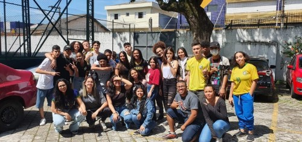
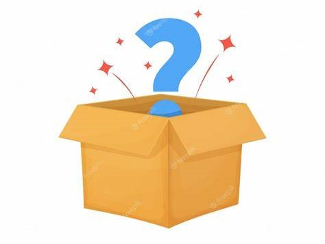
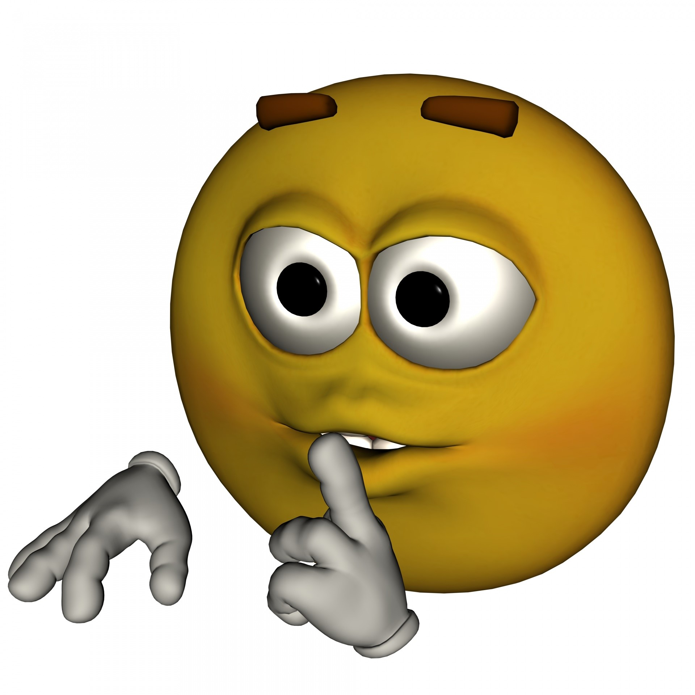
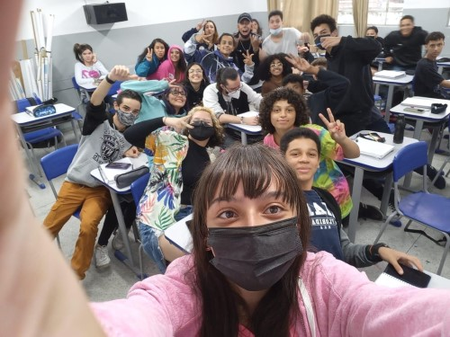
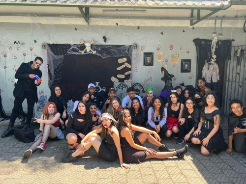
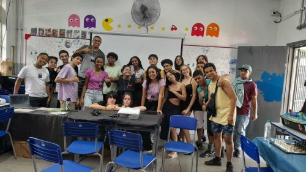

Esse momento foi preparado para uma pessoa muito especial, com muito carinho, e SÓ VOCÊ pode concluir esse desafio!!!
Você é uma professora recém formada em matemática, em busca de uma vaga perto de casa.
Você recebe um email informando a abertura de vagas na escola “Valdivino de Castro Pereira”, você…
Você priva uma série de pessoas de te conhecer. Deseja tentar novamente?

Tudo ainda é muito novo pra você. Você conhece algumas pessoas, entra em algumas turmas, faz alguns amigos.
E na segunda semana você está de frente à porta do 1° C, você…
Você piora em 90% o ano daquela turma, de qualquer forma, você não tem essa opção.

Agora você precisa ir até a sala 4 e descobrir como essa escolha foi importante.
(Responda isto depois de abrir o que estiver lá)

Pare de fingir que não está curiosa.

Viu? E essas não foram as únicas coisas importantes que você fez.
Dias depois você está de frente à porta do 1° B, você…
Esse é o seu trabalho, você não tem essa opção.
Agora você precisa ir até a sala 8 e descobrir como isso não foi o fim do mundo.
(Responda isto depois de abrir o que estiver lá)
NOS AJUDE!

Vê como deixa os ambientes mais leves?
É inevitável!
Os dias seguem e o trabalho continua, você PRECISA entrar na sala do 1° A, mas você ainda tem a opção de voltar, então você…
Na verdade, você não tem essa opção.
A sala 3 espera por você com alguma coisa especial em agradecimento.
(Responda isto depois de abrir o que estiver lá)
Torne as coisas mais fáceis.
Algumas coisas não são assim tão transparentes, mas você foi especial para essas pessoas, cada uma à sua maneira.
No ano seguinte, você tem a opção de ir embora, procurar outra escola melhor e mais fácil. Você vai?
Nós todos sabemos que não, você não vai embora.

Você ganha um presente, não convencional e barulhento, que você visita pelo menos seis vezes por semana.
Vá até a sala 9 para saber que presente é este.
(Responda quando já estiver com ele)